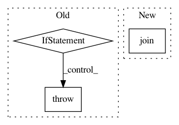

908c0c630a6c7c6e35b7bb0e172d41372bfb309d,python/ray/autoscaler/command_runner.py,SSHCommandRunner,run,#SSHCommandRunner#Any#Any#Any#Any#Any#Any#,291
Before Change
else:
self.process_runner.check_call(final_cmd)
except subprocess.CalledProcessError:
if exit_on_fail:
quoted_cmd = " ".join(final_cmd[:-1] + [quote(final_cmd[-1])])
raise click.ClickException(
"Command failed: \n\n {}\n".format(quoted_cmd)) from None
else:
raise click.ClickException(
"SSH command Failed. See above for the output from the"
" failure.") from None
def run_rsync_up(self, source, target):
self._set_ssh_ip_if_required()
self.process_runner.check_call([
"rsync", "--rsh",
After Change
cli_logger.verbose("Running `{}`", cf.bold(cmd))
with cli_logger.indented():
cli_logger.very_verbose("Full command is `{}`",
cf.bold(" ".join(final_cmd)))
def start_process():
try:
In pattern: SUPERPATTERN
Frequency: 3
Non-data size: 3
Instances
Project Name: ray-project/ray
Commit Name: 908c0c630a6c7c6e35b7bb0e172d41372bfb309d
Time: 2020-07-22
Author: maximsmol@gmail.com
File Name: python/ray/autoscaler/command_runner.py
Class Name: SSHCommandRunner
Method Name: run
Project Name: dmlc/gluon-cv
Commit Name: fdd55d36c05c747643fc98430a7f9b787b6cec16
Time: 2019-08-29
Author: yizhu59@gmail.com
File Name: gluoncv/data/kinetics400/classification.py
Class Name: Kinetics400
Method Name: _TSN_RGB
Project Name: dmlc/gluon-nlp
Commit Name: 6955fab0f4f0a38ead24cec84152d82769a0cfa2
Time: 2019-06-21
Author: linhaibin.eric@gmail.com
File Name: scripts/bert/run_pretraining_hvd.py
Class Name:
Method Name: